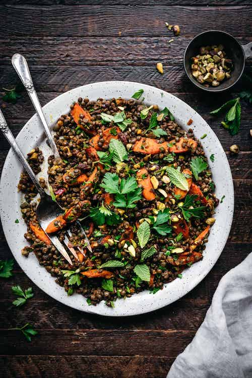

Home >
Morrocan Lentil Salad

Description
Whether you serve it as a main dish or a flavorful side, this vegan Moroccan-spiced Carrot and Lentil Salad is the
perfect year-round recipe.
French lentils pair perfectly with spiced, roasted carrots, pistachios and a citrus-y salad dressing.
Prep time: 10 min
Cook time: 30 min
Serves 4-6 people
Ingredients
- 3 cups cooked French green lentils (1 ¼-1 ½ cup dry lentils), cooked according to package directions.
- 6 medium carrots, peeled and sliced on a bias
- 1 ½ tbsp olive oil
- 1 medium shallot, diced finely
- 2 large cloves minced garlic
- ⅓ cup unsalted pistachios, chopped
- ⅓ cup golden raisins or sultana raisins
- 3 tbsp cilantro, chopped
- 3 tbsp parsley, chopped
Vinaigrette
- ½ cup olive oil
- 2 tbsp lemon juice
- 1 tbsp agave or date syrup
- 1 tsp smoked paprika
- ¾ tsp turmeric
- ¾ tsp salt
- ½ tsp cumin
- ¼ tsp cinnamon
- ¼ tsp cayenne
Steps
- Preheat oven to 375 F.
- Rinse and sort lentils, then cook lentils according to package directions. Make sure to add a generous pinch of
salt to the cooking liquid.
- In a small bowl, whisk together vinaigrette ingredients.
- Wash and peel carrot, then slice on a bias into evenly-sized pieces. Toss with 2 tablespoon of the vinaigrette,
then add to a sheet pan and roast for 20-25 minutes, stirring once halfway through cook time.
- Head a small sauté pan over medium heat. Add olive oil and diced shallot. Sauté for 5 minutes, stirring
occasionally, then add garlic and raisins and continue cooking for a few more minutes, until softened and
fragrant. Remove from heat.
- In a large mixing bowl, combine cooked lentils, shallot + garlic + raisin mixture, roasted carrots, pistachios,
cilantro, parsley and remaining vinaigrette. Toss until well coated. Enjoy hot or cold!